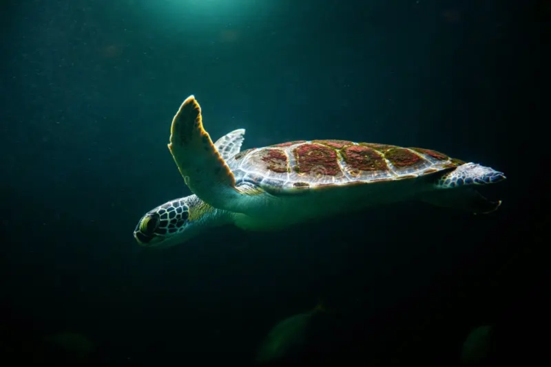

Book I — Xiopaxi
Part I
In the beginning, there was none.

Except for the Turtle, who lay in slumber.
The Turtle hovered over the endless void of none.
Its shell was darkness, its breath the stillness of all things.
And from the void, a shell was born.
The shell was the sea and the sky.

The shell was firm and yet hollow.
The shell trembled at the thought of creation.
The shell cracked open, and light poured forth.
It was a light unmeasured, a light that divided shadow from shadow.
The Turtle stirred within the shell.
Its eyes opened, and the darkness fled before its gaze.
The light spilled like water over the Turtle, and the void was no more.
The shell grew and burst into a million fragments, each becoming land and sea.
The Earth rose from the shattered shell.
Mountains were set in the valleys; rivers flowed in the hollows.
Yams and apples sprang from the soil, untouched, sacred.
The sky stretched above, high and infinite.
The Turtle lifted its head, and the stars were born upon its back.
Its breath became the wind, and the wind danced across the Earth.
The Turtle beheld all that was made and found it good.
And in its thought, the first word of Yanglix was spoken.
The faithful heard it and named the Turtle Pwatchidwax.
Thus the first day was marked, and the cycle of harvest began.